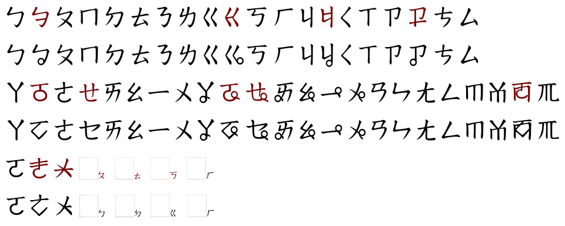

臺灣方音符號[編輯]
| 臺語方音符號 | |
|---|---|
以臺語方音符號書寫的「百科全書」 | |
| 類型 | （漢字旁註標記） |
| 創造者 | 朱兆祥、臺灣省國語推行委員會 |
使用時期 | 1946年至今 |
| 語言 | 臺灣台語、臺灣客家語 |
| 相關書寫體系 | |
| 父體系 | |
| 姊妹體系 | 粵語注音符號、苗語注音符號 閩東話注音符號、臺灣語假名 |
| ISO 15924 | |
| ISO 15924 | Bopo (285), Bopomofo |
| Unicode | |
| 別名 | Bopomofo |
| 範圍 | U+3100–U+312F U+31A0–U+31BF |
{kind=link}
| 臺灣方音符號 | |
| 漢字 | 方音符號 |
|---|---|
| 白話字 | Hong-im Hû-hō |
| 台語羅馬字 | Hong-im Hû-hō |
| 閩南拼音 | Hōngyīm Húhô |
| 方音符號 | ㄏㆲ ㄧㆬㄏㄨㄏㄜ˫ᐳ |
_and_Taiwanese_romanization_system.svg)
{kind=link}
方音符號（ㄏㆲ ㄧㆬㄏㄨㄏㄜ˫ᐳ，白話字、臺羅：Hong-im Hû-hō，客語白話字：Fông-yîm Fù-ho，英語：Taiwanese Phonetic Symbols, TPS），中華民國教育部官方稱謂為「方音符號系統」，民間又稱為臺語注音符號，是一套用來標注臺灣台語及臺灣客家語的標音符號。主要以注音符號為基礎，並增加一些國語中所沒有的發音符號，且有發音唯一的特性。
歷史
[編輯]方音符號系統，於1946年由臺灣省國語推行委員會方言組的閩南人朱兆祥教授設計[1]，期間由於政府呼籲全台軍公教學習台語[來源請求]，曾於臺灣廣播電臺擁有一段時間的教學節目，也於國語日報連載，以廈門音為標準，後出版，日後由於推行國語運動而式微，而朱教授則遠走新加坡[2][3]。
台灣大學中文系退休教授吳守禮所著的《國臺對照活用辭典》及鄉土文學作家楊青矗所著的《台華雙語辭典》採用此符號。1998年中華民國教育部公告使用。[4]2006年10月14日，教育部公布臺灣閩南語羅馬字拼音方案，官方轉向推行羅馬拼音[5]，推出官方辭典《臺灣閩南語常用詞辭典》[6]，並成為教育界的主流；而方音則因少人用少有字型支援[7]，有注音體系在中文電腦輸入標準設計上的共同缺憾，因字元編碼沒有加入子音母音上下排列的形式，而無法展現其閱讀優勢。使用率尚因歷史因素文獻短少而相對羅馬字低，但近年來已逐漸增加，如網路臺語字典《萌典》即有提供方音符號標音。
在方音符號設計前，國民政府基於漢語族下各種漢語的注音需求，已有由國語統一籌備委員會1932年四月出版的《注音符號總表》。這表由語言學家趙元任擔任主編，趙元任並以注音符號為基礎修改，增加40個符號，稱作「閏音符號」，用來為各種漢語注音。但多數方音符號都另行設計，只有少部分方音符號與閏音符號相同，例如「、、」這三個濁音化聲母。方音符母的韻母設計，基本上都跟閏音符號相異。
{kind=link}
{kind=link}
{kind=link}
2009年11月，連江縣政府在教育部指導下頒佈閩東話注音符號。臺灣方音符號的字型在電腦輸入方面、除了現有的各式閩南語輸入法外，目前亦有專門個人行動裝置手機輸入法軟體即「台語齒佈」；再以支援臺灣方音符號的電腦輸入法發展。[8]
符號表
[編輯]在中華民國教育部公佈的臺灣話通行腔中，共使用49個符號，其中26個來自國語注音符號，另外創造23個新符號以標示臺灣語言。
| 聲母 (21) | |||||||||||||||||||||||
|---|---|---|---|---|---|---|---|---|---|---|---|---|---|---|---|---|---|---|---|---|---|---|---|
| ㄅ | ㆠ | ㄆ | ㄇ | ㄉ | ㄊ | ㄋ | ㄌ | ㄍ | ㆣ | ㄎ | ㄫ | ㄏ | ㄐ | ㆢ | ㄑ | ㄒ | ㄗ | ㆡ | ㄘ | ㄙ | |||
| [p] | [b] | [pʰ] | [m] | [t] | [tʰ] | [n] | [l] | [k] | [g] | [kʰ] | [ŋ] | [h] | [t͡ɕ] | [d͡ʑ] | [t͡ɕʰ] | [ɕ] | [t͡s] | [d͡z] | [t͡sʰ] | [s] | |||
| 韻母 (24) | |||||||||||||||||||||||
| ㄚ | ㆩ | ㆦ | ㆧ | ㄛ | ㆤ | ㆥ | ㄞ | ㆮ | ㄠ | ㆯ | ㆰ | ㆱ | ㆬ | ㄢ | ㄣ | ㄤ | ㆲ | ㄥ | ㆭ | ㄧ | ㆪ | ㄨ | ㆫ |
| [a] | [ã] | [ɔ] | [ɔ̃] | [o] | [e] | [ẽ] | [ai] | [ãĩ] | [au] | [ãũ] | [am] | [ɔm] | [m̩] | [an] | [n] | [aŋ] | [ɔŋ] | [əŋ] | [ŋ̍] | [i] | [ĩ] | [u] | [ũ] |
- 以藍色標示者為國語不使用的符號，以紅字標示者為與國語音位不同的符號。
- 臺灣話有四種入聲韻尾，以小寫的「ㄅ [p̚ ]、ㄉ [t̚ ]、ㄍ [k̚ ]、ㄏ [ʔ]」標注。
- 在部分臺灣話方言中會使用「ㄬ[ɲ]、ㄜ [ə]、ㄝ [ɛ]、ㆨ [ɨ]」等符號做標音。
方音符號系統
[編輯]- 以下順序、例字以1998年教育部公告的文件 （頁面存檔備份，存於網際網路檔案館）為準，標音以教育部《臺灣閩南語常用辭典》的第一優勢腔的語音為主（非第一優勢腔或非語音另註）。部分說明來自吳守禮教授的介紹。
符號字源及發音
[編輯]聲母
[編輯]| 注音 | 圖檔 | 國際 音標 |
白話字 | 臺羅 拼音 |
說明 | 例字 |
|---|---|---|---|---|---|---|
| ㄅ | p | p | 與華語注音符號相同 | 邊（ㄅㆪ pinn）、布（ㄅㆦ˪ pòo） | ||
| ㄆ | pʰ | ph | 與華語注音符號相同 | 皮（ㄆㄨㆤˊ phuê）、配（ㄆㄨㆤ˪ phuè） | ||
| ㄇ | m | m | 與華語注音符號相同 | 棉（ㄇㄧˊ mî）、麵（ㄇㄧ˫ mī） | ||
| ㆠ | b[a] | b | 濁音化的ㄅ | 文（ㆠㄨㄣˊ bûn）、木（ㆠㄚㄍ̇ ba̍k） | ||
| ㄉ | t | t | 與華語注音符號相同 | 大（ㄉㄨㄚ˫ tuā）、肚（ㄉㆦ˫ tōo） | ||
| ㄊ | tʰ | th | 與華語注音符號相同 | 透（ㄊㄠ˪ thàu）、天（ㄊㆪ thinn） | ||
| ㄋ | n | n | 與華語注音符號相同 | 年（ㄋㄧˊ nî）、娘（ㄋㄧㄚˊ niâ） | ||
| ㄌ | l[b] | l | 與華語注音符號相同 | 來（ㄌㄞˊ lâi）、禮（ㄌㆤˋ lé） | ||
| ㄗ | t͡s | ch | ts | 與華語注音符號相同 | 船（ㄗㄨㄣˊ tsûn）、早（ㄗㄚˋ tsá） | |
| ㄐ | t͡ɕ | chi | tsi | 與華語注音符號相同 | 錢（ㄐㆪˊ tsînn）、前（ㄐㄧㄥˊ tsîng） | |
| ㄘ | t͡sʰ | chh | tsh | 與華語注音符號相同 | 醋（ㄘㆦ˪ tshòo）、草（ㄘㄠˋ tsháu） | |
| ㄑ | t͡ɕʰ | chhi | tshi | 與華語注音符號相同 | 千（ㄑㄧㄥ tshing）、七（ㄑㄧㄉ tshit） | |
| ㄙ | s | s | 與華語注音符號相同 | 蘇（ㄙㆦ soo）、洗（ㄙㆤˋ sé） | ||
| ㄒ | ɕ | si | 與華語注音符號相同 | 消（ㄒㄧㄠ siau）、先（ㄒㄧㄥ sing） | ||
| ㆡ | d͡z / z[c] | j | 濁音化的ㄗ或濁音化的ㄙ | 熱（ㆡㄨㄚㄏ̇ jua̍h）、軟（ㆡㄨㄢˋ juán，文讀音）[d] | ||
| ㆢ | d͡ʑ / ʑ[c] | ji | 濁音化的ㄐ或濁音化的ㄒ | 日（ㆢㄧㄉ̇ ji̍t）、二 (ㆢㄧ˫ jī) | ||
| ㄍ | k | k | 與華語注音符號相同 | 歌（ㄍㄨㄚ kua）、光（ㄍㆭ kng） | ||
| ㄎ | kʰ | kh | 與華語注音符號相同 | 苦（ㄎㆦˋ khóo）、考（ㄎㄜˋ khó） | ||
| ㄫ | ŋ | ng | 曾經為老國音使用的注音符號 | 吳（ㄫㆦˊ ngôo）、硬（ㄫㆤ˫ ngē） | ||
| ㆣ | g[e] | g | 濁音化的ㄍ | 義（ㆣㄧ˫ gī）、鵝（ㆣㄜˊ gô） | ||
| ㄏ | h | h | 不同於華語注音符號之音位[x] | 喜（ㄏㄧˋ hí）、花（ㄏㄨㆤ hue） | ||
{kind=link}
{kind=link}
{kind=link}
{kind=link}
{kind=link}
{kind=link}
{kind=link}
{kind=link}
{kind=link}
{kind=link}
{kind=link}
{kind=link}
{kind=link}
{kind=link}
{kind=link}
{kind=link}
{kind=link}
介母及韻母
[編輯]- 暗色背景表示用於特別腔口音，優勢腔不用。
| 注音 | 圖檔 | 國際 音標 |
白話字 | 臺羅 拼音 |
說明 | 範例 |
|---|---|---|---|---|---|---|
| ㄚ | a | a | 與華語注音符號相同。「ㄧㄚㄉ」有不同的語音實現，除了老派讀法[iat̚]，也有些人讀為[iɛt̚]或省略介音ㄧ讀為[ɛt̚]。[12] | 阿（ㄚ a）、設（ㄒㄧㄚㄉ siat） | ||
| ㆤ | e | e | 臺灣話特有的母音，相當於華語「ㄟ」/eɪ/的前半段，即發音為較閉口的ㄝ。 | 啞（ㆤˋ é）、矮（ㆤˋ é） | ||
| ㄧ | i | i | 與華語注音符號相同。作為聲母時，華語發為硬顎近音[j]，臺灣話則發為[ʔi]。 「ㄧㄍ」有不同的語音實現，包括[iɪk̚]、[iək̚] 等。 |
椅（ㄧˋ í）、色（ㄒㄧㄍ sik） | ||
| ㆦ | ɔ | o͘ | oo | 臺灣話特有的母音，發音為張較大嘴的ㄛ。 寫法類似國語注音符號的ㄛ，但第二筆寫法是缺右上角的菱型。[13] |
苦（ㄎㆦˋ khóo）、福（ㄏㆦㄍ hok） | |
| ㄛ | o | o | 與華語注音符號相同。由於第一優勢腔（分布於南部）將/o/發為[ə]（即臺羅[or]）， 後來逐漸改用ㄜ表示[ə]，而ㄛ專門用於表示發為[o]的腔調 但教育部的方音符號公告，[o]跟[or]都標為ㄛ，ㄜ只用於泉腔閏音 |
好（ㄏㄛˋ hó）、寶（ㄅㄛˋ pó） | ||
| ㄨ | u | o[f] / u | u | 與華語注音符號相同。作為聲母時，華語發為濁圓唇軟顎近音[w]，臺灣話則發為[ʔu]。 | 武（ㆠㄨˋ bú）、熨（ㄨㄉ ut） | |
| ㄝ | ɛ | ee | 與華語注音符號相同 部分偏漳腔的腔調其漳州特有[ɛ]並未併入/e/，用ㄝ表示 |
家（ㄍㄝ kee，內埔腔）、錫（ㄙㄝㄍ sek，永靖腔） | ||
| ㄜ | ə | er | 與華語注音符號音位不同，華語發音為[ɤ] 部分偏泉腔的腔調其泉州特有閏音[ə]並未併入/e/，用ㄜ表示。[1] |
火（ㄏㄜˋ hér，海口腔）、雞（ㄍㄜㆤ kere，三峽腔） | ||
| o | o / or | 與華語注音符號音位不同，華語發音為[ɤ] 第一優勢腔（分布於南部）將/o/發為[ə]（為區分時寫作 or ），後來逐漸改以ㄜ來表示 但教育部的方音符號公告，[o]跟[or]都標為ㄛ，ㄜ只用於泉腔閏音 |
好（ㄏㄜˋ hó）、寶（ㄅㄜˋ pó） | |||
| ㆨ | ɨ | ir | 部分偏泉腔的腔調其泉州特有[ɨ]並未併入/i/或/u/，用ㆨ表示 | 豬（ㄉㆨ tir，海口腔）、銀（ㆣㆨㄣˊ gîrn，三峽腔） | ||
| ㄞ | ai | ai | 與華語注音符號相同 | 愛（ㄞ˪ ài）、乖（ㄍㄨㄞ kuai） | ||
| ㄠ | au | au | 與華語注音符號相同 | 歐（ㄠ au）、跳（ㄊㄧㄠ˪ thiàu） | ||
| ㆩ | ã | aⁿ | ann | 鼻音化的ㄚ | 衫（ㄙㆩ sann）、山（ㄙㄨㆩ suann）[g] | |
| ㆥ | ẽ | eⁿ | enn | 鼻音化的ㆤ | 嬰（ㆥ enn）、病（ㄅㆥ˫ pēnn） | |
| ㆪ | ĩ | iⁿ | inn | 鼻音化的ㄧ | 天（ㄊㆪ thinn）、院（ㆪ˫ īnn） | |
| ㆧ | ɔ̃ | oⁿ | onn | 鼻音化的ㆦ。 | 好（ㄏㆧ˪ hònn，文讀音）、否（ㄏㆧˋ hónn）[h] | |
| ㆫ | ũ | uⁿ | unn | 鼻音化的ㄨ。只用在結合韻母ㄧㆫ /ĩũ/ | 鴦（ㄧㆫ iunn）、張（ㄉㄧㆫ tiunn） | |
| ㆬ | m̩ | m | 韻化的ㄇ，可作為鼻音韻尾或韻化輔音 | 姆（ㆬˋ ḿ）、音（ㄧㆬ im） | ||
| ㆭ | ŋ̍ | ng | 韻化的ㄫ，可作為鼻音韻尾或韻化輔音 | 黃（ㆭˊ n̂g）、秧（ㆭ ng） | ||
| ㆮ | ãĩ | aiⁿ | ainn | 鼻音化的ㄞ | 閒（ㆮˊ âinn，同安腔）[i]、歹（ㄆㆮˋ pháinn） | |
| ㆯ | ãũ | auⁿ | aunn | 鼻音化的ㄠ，罕用 | 喓（ㄧㆯ iaunn）[j] | |
| ㆰ | am | am | ㄚ與ㆬ的結合 | 暗（ㆰ˪ àm）、甘（ㄍㆰ kam） | ||
| ㄢ | an | an | 與華語注音符號相同。「ㄧㄢ」有不同的語音實現，除了老派讀法[ian]，也有些人讀為[iɛn]或省略介音ㄧ讀為[ɛn]。[12] | 限（ㄢ˫ ān）、煙（ㄧㄢ ian） | ||
| ㄤ | aŋ | ang | 與華語注音符號相同 | 港（ㄍㄤˋ káng）、項（ㄏㄤ˫ hāng） | ||
| ㆱ | ɔm | om | ㆦ與ㆬ的結合，罕用 | 參（ㄙㆱ som，內埔腔）、掩（ㆱ om） | ||
| ㆲ | ɔŋ | ong | 臺灣話特有的韻母。類似於華語注音符號中有接聲母的結合韻母-ㄨㄥ /-ʊŋ/，但較張口 | 王（ㆲˊ ông）、勇（ㄧㆲˋ ióng） | ||
| ㄣ | n | -n | 與華語注音符號相同，只用在結合韻母ㄧㄣ、ㄨㄣ及ㆨㄣ | 因（ㄧㄣ in）、溫（ㄨㄣ un）、恩（ㆨㄣ irn，三峽腔） | ||
| ㄥ | əŋ | -ng | 只用在結合韻母ㄧㄥ [iəŋ]，注意其與華語發音[iŋ]不同 | 永（ㄧㄥˋ íng）、兵（ㄅㄧㄥ ping） | ||
{kind=link}
{kind=link}
{kind=link}
{kind=link}
{kind=link}
{kind=link}
{kind=link}
{kind=link}
{kind=link}
{kind=link}
{kind=link}
{kind=link}
組合韻母
[編輯]| 界音 | 舒聲韻 | 入聲韻 | |||||||||||||||||||||||||||||||||
|---|---|---|---|---|---|---|---|---|---|---|---|---|---|---|---|---|---|---|---|---|---|---|---|---|---|---|---|---|---|---|---|---|---|---|---|
| 無 | 以單一符號表示 | ㄚ ㆴ |
ㄚ ㆵ |
ㄚ ㆻ |
ㄚ ㆷ |
ㆩ ㆷ |
ㆦ ㆴ |
ㆦ ㆵ |
ㆧ ㆷ |
ㄛ ㆷ |
ㄜ ㆷ |
ㄝ ㆷ |
ㆤ ㆷ |
ㆥ ㆷ |
ㄞ ㆷ |
ㆮ ㆷ |
ㄠ ㆷ |
ㆯ ㆷ |
ㆬ ㆷ |
ㆭ ㆷ | |||||||||||||||
| ㄧ (ㆪ) |
ㄧ ㄚ |
ㄧ ㆩ |
ㄧ ㄛ |
ㄧ ㆧ |
ㄧ ㄠ |
ㄧ ㆯ |
ㄧ ㆰ |
ㄧ ㆬ |
ㄧ ㄣ |
ㄧ ㄥ |
ㄧ ㄢ |
ㄧ ㄤ |
ㄧ ㆲ |
ㄧ ㄨ |
ㄧ ㆫ |
ㄧ ㆴ |
ㄧ ㆵ |
ㄧ ㆻ |
ㄧ ㆷ |
ㄧ ㄚ ㆴ |
ㄧ ㄚ ㆵ |
ㄧ ㄚ ㆻ |
ㄧ ㄚ ㆷ |
ㄧ ㆩ ㆷ |
ㄧ ㆦ ㆻ |
ㄧ ㄛ ㆷ |
ㄧ ㄠ ㆷ |
ㄧ ㆯ ㆷ |
ㄧ ㄨ ㆷ |
ㄧ ㆫ ㆷ |
ㆪ ㆷ |
||||
| ㄨ (ㆫ) (ㄜ) |
ㄨ ㄚ |
ㄨ ㆩ |
ㄨ ㄝ |
ㄨ ㆤ |
ㄨ ㆥ |
ㄨ ㄞ |
ㄨ ㆮ |
ㄨ ㄢ |
ㄨ ㄣ |
ㄨ ㄤ |
ㄨ ㄧ |
ㄨ ㆪ |
ㆫ ㆬ |
ㆫ ㄣ |
ㆫ ㄥ |
ㆫ ㆪ |
ㄨ ㆵ |
ㄨ ㆷ |
ㄨ ㄚ ㆵ |
ㄨ ㄚ ㆻ |
ㄨ ㄚ ㆷ |
ㄨ ㆤ ㆷ |
ㄨ ㆥ ㆷ |
ㄨ ㄞ ㆷ |
ㄨ ㆮ ㆷ |
ㄨ ㄧ ㆷ |
ㄨ ㆪ ㆷ |
ㆫ ㆴ |
ㆫ ㆵ |
ㆫ ㆻ |
ㄜ ㆤ ㆷ |
||||
{kind=link}
{kind=link}
{kind=link}
{kind=link}
{kind=link}
聲調
[編輯]聲調系統標示採用臺灣話優勢腔與國語注音符號調值相近者，臺灣話優勢腔陰上聲使用國語去聲的調號，另外新增陰去（˪）及陽去（˫）兩符號。因臺灣話優勢腔中的陽上聲已經併入陽去聲，故方音符號沒有設計對應符號。臺灣話優勢腔陽入的本調，至今仍有大差異，大致上，中北部除泉州腔外，讀作中促調者為絕大多數的主流，南部則以高促調、高降促調為主流，臺南、高雄、屏東一帶多為高降促調，臺南尤降，甚至降至與標準國語去聲相同的「51」，整體而言，中北部的中促調多過南部的高促調、高降促調。
| 調序(調號) | 1 | 2 | 3 | 4 | 5 | 7 | 8 |
|---|---|---|---|---|---|---|---|
| 調類 | 陰平 | 陰上 | 陰去 | 陰入 | 陽平 | 陽去 | 陽入 |
| im-piânn | im-siōng | im-khì | im-ji̍p | iông-piânn | iông-khì | iông-ji̍p | |
| 符號 | 無 | ˋ | ˪ | ㆴ、ㆵ、ㆻ、ㆷ | ˊ | ˫ | ㆴ̇、ㆵ̇、ㆻ̇、ㆷ̇ |
| 本調調值 | ˦ | ˥˧ | ˨˩ | ˧˨ | ˨˦ | ˧ | ˧ ˦ ˥˧ |
| 44 | 53 | 21 | 32 | 24 | 33 | 3 4 53 | |
| 範例 | ㄉㆲ（東） | ㄉㆲˋ（黨） | ㄉㆲ˪（棟） | ㄉㆦㆻ（督） | ㄉㆲˊ（同） | ㄉㆲ˫（洞） | ㄉㆦㆻ̇ （毒） |
其他應用
[編輯]各語言使用狀況及排列順序
[編輯]依照吳守禮教授之著作《華、台語注音符號總表》[17]及發音說明[18]；另外增加了聲母「」來表示「濁音ㄉ」（d），並表示臺語的「ㄌ」實際上發音較接近「濁音ㄉ」；此外也將老國音的聲母「ㄪ、ㄬ、ㄫ」加回；並增加了韻母「」來表示泉州方言腔的[oe]。方音符號與注音符號之合併排列順序為：
{kind=link}
{kind=link}
| 聲 母 及 入 聲 韻 尾 |
符 號 |
總數 | |||||||||||||||||||||||||||||||||
|---|---|---|---|---|---|---|---|---|---|---|---|---|---|---|---|---|---|---|---|---|---|---|---|---|---|---|---|---|---|---|---|---|---|---|---|
| ㄅ | ㆠ | ㄆ | ㄇ | ㄈ | ㄪ | ㄉ | ㄉ | ㄊ | ㄋ | ㄌ | ㄍ | ㆣ | ㄎ | ㄫ | ㄏ | ㄐ | ㆢ | ㄑ | ㄬ | ㄒ | ㄓ | ㄔ | ㄕ | ㄖ | ㄗ | ㆡ | ㄘ | ㄙ | ㆴ | ㆵ | ㆻ | ㆷ | |||
| 國際音標 | p | b | pʰ | m | f | v | t | d | tʰ | n | l | k | g | kʰ | ŋ | x h |
t͡ɕ | d͡ʑ | t͡ɕʰ | ȵ | ɕ | t͡ʂ t͡ʃ |
t͡ʂʰ t͡ʃʰ |
ʂ ʃ |
ʐ ʒ |
t͡s | d͡z | t͡sʰ | s | p̚ | t̚ | k̚ | ʔ | ||
| 國語使用 | ㄅ | ㄆ | ㄇ | ㄈ | ㄉ | ㄊ | ㄋ | ㄌ | ㄍ | ㄎ | ㄏ | ㄐ | ㄑ | ㄒ | ㄓ | ㄔ | ㄕ | ㄖ | ㄗ | ㄘ | ㄙ | 21 | |||||||||||||
| 臺語使用 | ㄅ | ㆠ | ㄆ | ㄇ | ㄉ | ㄉ | ㄊ | ㄋ | ㄌ | ㄍ | ㆣ | ㄎ | ㄫ | ㄏ | ㄐ | ㆢ | ㄑ | ㄬ | ㄒ | ㄗ | ㆡ | ㄘ | ㄙ | ㆴ | ㆵ | ㆻ | ㆷ | 21+4 | |||||||
| 客語使用 | ㄅ | ㆠ | ㄆ | ㄇ | ㄈ | ㄪ | ㄉ | ㄊ | ㄋ | ㄌ | ㄍ | ㄎ | ㄫ | ㄏ | ㄐ | ㄑ | ㄬ | ㄒ | ㄓ | ㄔ | ㄕ | ㄖ | ㄗ | ㄘ | ㄙ | ㆴ | ㆵ | ㆻ | 19~21+3 | ||||||
| 韻 母 |
總 數 | ||||||||||||||||||||||||||||||||||
| ㄚ | ㆩ | ㆦ | ㆧ | ㄛ | ㄜ | ㄝ | ㆤ | ㆥ | ㄞ | ㆮ | ㄟ | ㄠ | ㆯ | ㄡ | ㆰ | ㆱ | ㆬ | ㄢ | ㄣ | ㄤ | ㆲ | ㄥ | ㆭ | ㄦ | ㄧ | ㆪ | ㄨ | ㆨ | ㆫ | ㄩ | |||||
| 國際音標 | a | ã | ɔ | ɔ̃ | o | ə ɤ |
ɛ | e | ẽ | ai | ãĩ | ei | au | ãũ | ou | am | ɔm | m̩ | an | ən | aŋ | ɔŋ | əŋ | ŋ̍ | ɚ | i | ĩ | u | ɨ | ũ | y | ||||
| 國語使用 | ㄚ | ㄛ | ㄜ | ㄝ | ㄞ | ㄟ | ㄠ | ㄡ | ㄢ | ㄣ | ㄤ | ㄥ | ㄦ | ㄧ | ㄨ | ㄩ | 16 | ||||||||||||||||||
| 臺語使用 | ㄚ | ㆩ | ㆦ | ㆧ | ㄛ | ㄜ | ㄝ | ㆤ | ㆥ | ㄞ | ㆮ | ㄠ | ㆯ | ㆰ | ㆱ | ㆬ | ㄢ | ㄣ | ㄤ | ㆲ | ㄥ | ㆭ | ㄧ | ㆪ | ㄨ | ㆨ | ㆫ | 24~25 | |||||||
| 客語使用 | ㄚ | ㆦ | ㄛ | ㄜ | ㄝ | ㆤ | ㄞ | ㄠ | ㆰ | ㆬ | ㄢ | ㄣ | ㄤ | ㆲ | ㄥ | ㆭ | ㄧ | ㄨ | ㆨ | 17 | |||||||||||||||
{kind=link}
- 註1：灰字者為僅部分腔調中使用者。「ㄏ」在國語中表示[x]，但在臺語及客語中表示[h]。
- 註2：「ㆠ」僅用於詔安腔；「ㄐ、ㄑ、ㄒ」僅用於四縣腔；「ㄓ、ㄔ、ㄕ、ㄖ」在大埔、海陸、饒平、詔安等四腔中表示[t͡ʃ]、[t͡ʃʰ]、[ʃ]、[ʒ]，與國語中表示[t͡ʂ]、[t͡ʂʰ]、[ʂ]、[ʐ]不同。
- 註3：大埔、海陸、饒平20；四縣19；詔安21。
- 註4：臺語中「ㄛ」與「ㄜ」為同一個音位，但因地方腔調不同，會呈現[o]、[ɤ]、[ə]之音。臺語中「ㄝ」與「ㆤ」為同一個音位，但隨地方腔調差異而不同。
音標
[編輯]注音符號為臺灣學生所學之第一套音標符號，故常被拿來做其他語言的標音系統。其可標示的音位如下
| 雙唇音 | 唇齒音 | 齒齦音 | 齦後音 | 翹舌音 | 齦顎音 | 硬顎音 | 軟顎音 | 聲門音 | |||||||||
|---|---|---|---|---|---|---|---|---|---|---|---|---|---|---|---|---|---|
| 清音 | 濁音 | 清音 | 濁音 | 清音 | 濁音 | 清音 | 濁音 | 清音 | 濁音 | 清音 | 濁音 | 濁音 | 清音 | 濁音 | 清音 | ||
| 鼻音 | ㄇ [m] | ㄋ [n] | ㄬ [ɲ] | ㄫ [ŋ] | |||||||||||||
| 塞音 | 不送氣 | ㄅ [p] | ㆠ [b] | ㄉ [t] | ㄉ [d] | ㄍ [k] | ㆣ [g] | ||||||||||
| 送氣 | ㄆ [pʰ] | ㄊ [tʰ] | ㄎ [kʰ] | ||||||||||||||
| 塞擦音 | 不送氣 | ㄗ [ʦ] | ㆡ [ʣ]| | ㄓ [ʧ] | ㄓ [ʈʂ] | ㄐ [ʨ] | ㆢ [ʥ] | ||||||||||
| 送氣 | ㄘ [ʦʰ] | ㄔ [ʧʰ] | ㄔ [ʈʂʰ] | ㄑ [ʨʰ] | |||||||||||||
| 擦音 | ㄈ [f] | ㄪ [v] | ㄙ [s] | ㄕ [ʃ] | ㄖ [ʒ] | ㄕ [ʂ] | ㄖ [ʐ] | ㄒ [ɕ] | ㄏ [x] | ㄏ [h] | |||||||
| 邊音 | ㄌ [l] | ||||||||||||||||
| 前元音 | 央元音 | 後元音 | |||
|---|---|---|---|---|---|
| 不圓唇 | 圓唇 | 不圓唇 | 不圓唇 | 圓唇 | |
| 閉元音 | ㄧ [i] | ㄩ [y] | ㆨ [ɨ] | ㄭ [ɯ] | ㄨ [u] |
| 半閉元音 | ㆤ [e] | ㄜ [ɤ] | ㄛ [o] | ||
| 中元音 | ㄜ [ə] | ||||
| 半開元音 | ㄝ [ɛ] | ㆦ [ɔ] | |||
| 開元音 | ㄚ [a] | ||||
變體
[編輯]楊青矗式
[編輯]楊青矗修改了部分符號，使外型易於辨認，稱為〈Modern Bopomofo Extensions〉(簡稱 MBE)，用於他所著作的辭典等語文教材中。
{kind=link}
在其書中排列方式如下：
| 聲母 | |
|---|---|
| 韻母 | |
| 方言韻及入聲 |
{kind=link}
楊靑矗式符號（上行）跟正式的臺灣方音符號（下行）對照如下，楊靑矗修改者以棕色標示：
| 聲母 |  |
|---|---|
| 韻母 | |
| 方言韻及入聲 |
{kind=link}
國小閩南語教材
[編輯]出版社所推出的國民小學閩南語最新版本教材中，多在漢字旁同時標註台羅拼音及注音符號變體。它們用的注音符號變體，跟方音符號的規定不太一樣。有些版本只用數個方音符號，比如「翰林」及「康軒」這兩家出版社的最新版，只採用四個方音符號；有些版本（或是受限於字型支援）則不使用任何方音符號，而用Unicode1.0就支援的注音符號（含老國音符號）和「゜」來完成所有拼寫。
- 輔音使用方音符號規定的「ㆠ、ㆡ、ㆡ、ㆣ、ㄫ」表示台羅拼音的b、j、ji、g、ng。例如「母」標作「ㆠㄨ²」，「日」標作「ㆡㄧㄉ⁸」，「我」標作「ㆣㄨㄚ²」，「吳」標作「ㄫㄛ⁵」。
（有些版本則採用「ㄪ、ㄖ、ㄖ、ㄫ、ﾟㄫ」，而不是方音符號所規定的，例如「母」標作「ㄪㄨ²」，「日」標作「ㄖㄧㄉ⁸」，「我」標作「ㄫㄨㄚ²」，「吳」標作「ﾟㄫㄛ⁵」。） - 元音使用「ㄜ、ㄛ、ㄝ」表示台羅拼音的o、oo、e，而不是方音符號規定的「ㄛ、ㆦ、ㆤ」，例如「做」標作「ㄗㄜ³」，「雨」標作「ㄏㄛ⁷」，「爸」標作「ㄅㄝ⁷」。
- 鼻化韻是在「ㄚ、ㄝ、ㄧ、ㄛ、ㄨ」右上標註一個小圈圈表示，即寫作「ㄚﾟ、ㄝﾟ、ㄧﾟ、ㄛﾟ、ㄨﾟ」，而不是方音符號規定的「ㆩ、ㆥ、ㆪ、ㆧ、ㆫ」，例如「聽」標作「ㄊㄧㄚﾟ¹」。
（有些版本則是在整個音節的左上方標註一個小圈圈，例如「聽」標作「ﾟㄊㄧㄚ¹」，韻中的元音沿用不鼻化的「ㄚ、ㄝ、ㄧ、ㄛ、ㄨ」。） - 鼻音韻尾使用「ㄇ、ㄣ、ㄥ」表示台羅拼音的m、n、ng，例如「金」標作「ㄍㄧㄇ¹」，「情」標作「ㄐㄧㄥ⁵」；「ㄚㄣ／ㄚㄋ」和「ㄚㄥ／ㄚㄫ」繼續維持使用「ㄢ」和「ㄤ」，例如「阮」標作「ㆣㄨㄢ²」，「通」標作「ㄊㄤ¹」；但ong寫作「ㄛㄥ」而非規定的「ㆲ」，例如「揚」標作「ㄧㄛㄥ⁵」。
- 入聲韻尾使用「ㄅ、ㄉ、ㄍ、ㄏ」（大小不變，和方音符號不同，沒有側標小寫）表示台羅拼音的p、t、k、h，例如「冊」標作「ㄘㄝㄏ⁴」，「李白」的「白」標作「ㄅㄧㄍ⁸」（文讀音）。
- 韻化輔音使用「ㄇ、ㄥ」表示台羅拼音的m、ng，而不是方音符號規定的「ㆬ、ㆭ」，例如「毋通」的「毋」標作「ㄇ⁷」。
- 聲調調號採用數字標號，標號對應聲調和台羅拼音數字式相同，在右上角標號。
電腦支援
[編輯]Unicode
[編輯]在Unicode方面，自1.0 版即收錄了40個注音符號（包括「ㄪ、ㄫ、ㄬ」這三個用於老國音的符號）在 U+3105-U+312C，稱為「Bopomofo」區。國語中所沒有的擴充符號則在 Unicode 3.0版收錄在 U+31A0-U+31B7 ，稱為「Bopomofo Extended」區。
| 注音符號 Bopomofo[1][2] Unicode聯盟官方碼表（PDF） | ||||||||||||||||
| 0 | 1 | 2 | 3 | 4 | 5 | 6 | 7 | 8 | 9 | A | B | C | D | E | F | |
| U+310x | ㄅ | ㄆ | ㄇ | ㄈ | ㄉ | ㄊ | ㄋ | ㄌ | ㄍ | ㄎ | ㄏ | |||||
| U+311x | ㄐ | ㄑ | ㄒ | ㄓ | ㄔ | ㄕ | ㄖ | ㄗ | ㄘ | ㄙ | ㄚ | ㄛ | ㄜ | ㄝ | ㄞ | ㄟ |
| U+312x | ㄠ | ㄡ | ㄢ | ㄣ | ㄤ | ㄥ | ㄦ | ㄧ | ㄨ | ㄩ | ㄪ | ㄫ | ㄬ | ㄭ | ㄮ | ㄯ |
| 註釋 | ||||||||||||||||
| 注音符號擴展 Bopomofo Extended[1][2] Unicode聯盟官方碼表（PDF） | ||||||||||||||||
| 0 | 1 | 2 | 3 | 4 | 5 | 6 | 7 | 8 | 9 | A | B | C | D | E | F | |
| U+31Ax | ㆠ | ㆡ | ㆢ | ㆣ | ㆤ | ㆥ | ㆦ | ㆧ | ㆨ | ㆩ | ㆪ | ㆫ | ㆬ | ㆭ | ㆮ | ㆯ |
| U+31Bx | ㆰ | ㆱ | ㆲ | ㆳ | ㆴ | ㆵ | ㆶ | ㆷ | ㆸ | ㆹ | ㆺ | ㆻ | ㆼ | ㆽ | ㆾ | ㆿ |
註釋
| ||||||||||||||||
但其中「ㆦ、ㆧ、ㆱ」與原方案字型有明顯差別；「ㆪ」與「ㆳ」為同一符號重複編碼（注音符號之「ㄧ」僅收入一種，由字型之橫豎排設定來決定顯示形狀）；入聲韻尾「ㆶ」更是錯誤形狀，原本應收錄「ㆻ」才正確。
Unicode 12.0版本更正了「ㆦ、ㆧ、ㆱ」的字型。[19]可參見注音符號修正之提案。[20]
Unicode 13.0版本新增了用以取代「ㆶ」的「ㆻ」。[21]
文字處理
[編輯]目前已經有不少字型內含方音符號的字型，也有輸入工具，如：
- 開源字型文泉驛正黑體
- 開源字型GNU Unifont [3] （頁面存檔備份，存於網際網路檔案館）
- 開源字型freedesktop.org 的 CJK Unifonts 字型
- 開源字型一點明體 （頁面存檔備份，存於網際網路檔案館）
- 開源字型全字庫注音符號修訂 （頁面存檔備份，存於網際網路檔案館）
- 蘋方體
- 微軟雅黑
- 微軟正黑體
- 開源字型思源黑體
- 微軟GB18030 Support Package （簡體中文版） （頁面存檔備份，存於網際網路檔案館）。該字型安裝後有simsun-ExtA與simsun-ExtB，而注音擴充就在simsun-ExtA裡。
- 臺灣詔安客語教學資源中心 台灣楷體字型 （頁面存檔備份，存於網際網路檔案館）
- 從宜台語注音符號輸入字型、工具及顯示程式(2006版) （頁面存檔備份，存於網際網路檔案館）
中華民國中央研究院提供「吳守禮標楷台語注音字型」、「吳守禮細明台語注音字型」、「吳守禮台語注音字型」等三套字體，另有「吳守禮台語注音輸入法」，可於此下載。[22][23]前述三套字體，只要套用於漢字即會產生方音符號，欲到一字多音時，可選用同系列的「破音」字體。
實例
[編輯]科學短語
[編輯]全部个科學朗只不過是偕平常時所思考个閣再提煉 ── 愛因斯坦 [k]
ㄗㄨㄢ㇒…ㄅㆦ˫ᐳ ㆤ㇒ㄎㄜ…ㄏㄚ＇ㄍᐳㄌㆲ㇔ㄐㄧ㇔…ㄅㄨ ㄉ…ㄍㄜ˪ㄒㄧ˫ㄍㄚ˫ㄅㄧㄥ㇒…ㄒㄧㆲ㇒…ㄒㄧ㇒ᐳㄙㆦ㇔ㄙㄨ…ㄎㄜ㇔∷ ㆤ㇒ㄍㄜ ㄏ…ㄗㄞ˪ㄊㆤ㇒…ㄌㄧㄢ˫ᐳ ── ㄞ˪… ㄧㄣ…ㄙㄨ…ㄊㄢ㇔ᐳ [l]
{kind=link}
春曉
[編輯]| 春曉 孟浩然 | ㄘㄨㄣ ㄏㄧㄠˋ ㆠㄧㄥ˫ ㄏㄜ˫ ㆢㄧㄢˊ | |
| 春眠不覺曉， | ㄘㄨㄣ ㆠㄧㄢˊ ㄅㄨㆵ ㄍㄚㆻ ㄏㄧㄠˋ， | |
| 處處聞啼鳥。 | ㄘㄨ˪ ㄘㄨ˪ ㆠㄨㄣˊ ㄊㄧˊ ㄋㄧㄠˋ。 | |
| 夜來風雨聲， | ㄧㄚ˫ ㄌㄞˊ ㄏㆲ ㄨˋ ㄒㄧㄥ， | |
| 花落知多少？ | ㄏㄨㄚ ㄌㄜㆻ ㄉㄧ ㄉㄜ ㄒㄧㄠˋ？ |
聯合國世界人權宣言（漢字與方音符號對照）
[編輯]| 聯合國世界人權宣言 | ㄌㄧㄢˊㄏㄚㆴ̇ㄍㆦㆻㄙㆤᒻㄍㄞᒻ ㆢㄧㄣˊㄎㄨㄢˊ ㄙㄨㄢㆣㄧㄢˊ |
| 第一條 | ㄉㆤ⊦ㄧㆵ ㄉㄧㄠˊ |
| 咱人生來自由， | ㄌㄢˋㄌㄤˊ ㄙㆥ ㄌㄞˊ ㄗㄨ⊦ㄧㄨˊ， |
| 值尊嚴偕權利上一律平等， | ㄉㄧ⊦ㄗㄨㄣ ㆣㄧㆰˊ ㄍㄚㆷ ㄎㄨㄢˊㄌㄧ⊦ ㄒㄧㆲ ㄧㆵㄌㄨㆵ̇ ㄅㄧㄥˊㄉㄧㄥˋ， |
| 咱人有理性偕良心， | ㄌㄢˋㄌㄤˊ ㄨ⊦ ㄌㄧˋㄒㄧㄥᒻ ㄍㄚㆷ ㄌㄧㆲˊㄒㄧㆬ， |
| 而且應該以兄弟關係个精神 | ㆢㄧˊㄑㄧㆩˋ ㄧㄥˋㄍㄞ ㄧˋ ㄏㄧㆩㄉㄧ⊦ ㄍㄨㄢㄏㆤ⊦ ㆤˊ ㄐㄧㄥㄒㄧㄣˊ |
| 來互相對待。 | ㄌㄞˊ ㄏㆦ⊦ㄒㄧㆲ ㄉㄨㄧᒻㄊㄞ⊦。 |
航海家1號閩南語問候語
[編輯]美國太空船旅行者1號是一艘無人外太陽系太空探測器，於1977年9月5日發射，截止到2010年仍然正常運作。旅行者1號上攜帶了一張銅質磁碟唱片，內容包括用55種人類語言錄制的問候語和各類音樂，旨在向「外星人」表達人類的問候。唱片有12英寸厚，鍍金表面，內藏留聲機針。其中包括閩南語之問候語其意為：太空朋友，你們好！你們吃飽了嗎？有空時，就來我們這兒坐一坐。[24]
| 閩南語語音內容對照 | 方音符號 |
| 太空朋友，恁好！ | ㄊㄞᒻㄎㆲ ㄅㄧㄥˊㄧㄨˋ，ㄌㄧㄣˋㄏㄜˋ！ |
| 恁食飽未？ | ㄌㄧㄣˋ ㄐㄧㄚㆷ̇ㄅㄚˋ ㆠㆤ⊦？ |
| 有閒，就來阮茲坐喔。 | ㄨ⊦ㄧㄥˊ，ㄉㄜ⊦ ㄌㄞˊ ㆣㄨㄣ ㄐㄧㄚ ㄗㆤ⊦ ㄛㆷ。 |
註釋
[編輯]- ^ 亦有認為其是帶有鼻音的/b̃/。
- ^ 部分學者認為柳聲母發音並不是齒齦邊音（/l/），而是較接近濁齒齦塞音（/d/）或齒齦閃音（/ɾ/）。[1][9][10]
- ^ 移至： 3.0 3.1 「ㆡ」與「ㆢ」在泉音為[d͡z]與[d͡ʑ]，在漳音則為[z]與[ʑ]。
- ^ 1998教育部公布的方音符號文件列此為例字，但現在的教育部字典已改標為 luán。[11]，但是一些早期的辭典（如1913年出版的《甘字典》，還是標 juán，j 弱化成 l 是臺語很常見的現象。
- ^ 亦有認為其是帶有鼻音的/g̃/。
- ^ 白話字在「ㄨ」後接有「ㄚ、ㆤ」等母音的韻母時，寫作 oa、oe ，如「ㄨㄞ」寫作 oai 。其他則用 u 。
- ^ 1998年教育部公布的方音符號文件，其例字為「籃」，但目前的教育部字典已改標為nâ[14]，因此換一例字。
- ^ 1998年教育部公布的方音符號文件，其例字為「午」，但目前的教育部字典已改標為ngóo[15]，因此換一例字。
- ^ 1998年教育部公布的方音符號文件，其例字就用這個罕用腔，目前的教育部字典並沒收這個音，在《臺日大辭典》中則有。
- ^ 1998年教育部公布的方音符號文件，其例字為「藕」，但目前的教育部字典已改標為ngāu[16]，因此換一例字；教育部字典只有「喓」有aunn的音。
- ^ 原文：「The whole of science is nothing more than a refinement of everyday thinking.」 — Albert Einstein, Out of My Later Years (1950)
- ^ ㄗㄨㄢ㇒ㄅㆦ˫ᐳ ㆤ㇒ ㄎㄜ⎾ㄏㄚ＇ㄍᐳ ㄌㆲ㇔ ㄐㄧ㇔ㄅㄨ ㄉㄍㄜ˪ ㄒㄧ˫ ㄍㄚ˫ ㄅㄧㄥ㇒ㄒㄧㆲ㇒ㄒㄧ㇒ᐳ ㄙㆦ㇔ㄙㄨ⎾ㄎㄜ㇔∷ ㆤ㇒ ㄍㄜ ㄏㄗㄞ˪ ㄊㆤ㇒ㄌㄧㄢ˫ᐳ 。（以空白分詞，並顯示陰平調符）
參考資料
[編輯]- ^ 移至： 1.0 1.1 1.2 吳守禮. 華、台語注音符號溯源 (PDF). 台語天地. （原始內容 (PDF)存檔於2022-03-17）.
- ^ 台灣方音符號序 http://olddoc.tmu.edu.tw/chiaushin/chu-1.htm （頁面存檔備份，存於網際網路檔案館）
- ^ 百年來的閩南系臺灣話研究回顧. （原始內容存檔於2009-06-25）.
- ^ 台(87)語字第八七〇〇〇五七七號公告，《方音符號系統 （頁面存檔備份，存於網際網路檔案館）》，中華民國教育部，1998年1月12日
- ^ 台語字第0950151609號公告，《臺灣閩南語羅馬字拼音方案 （頁面存檔備份，存於網際網路檔案館）》，中華民國教育部，2006年10月14日
- ^ [1]（頁面存檔備份，存於網際網路檔案館）
- ^ 洪惟仁. 閩南語書寫法的發展 (PDF). 第七屆臺灣語言及其教學國際學術研討會. [2020-04-20]. （原始內容 (PDF)存檔於2012-09-16）.
- ^ 台語齒佈(Chuehfu Tech) App. Google Play.
- ^ 董同龢，記台灣的一種閩南語，中研院史語所，1967.06
- ^ 鄭良偉，台語語音規律大綱及語例，1996
- ^ 教育部閩南語常用辭典-軟. [2016-03-13]. （原始內容存檔於2019-11-30）.
- ^ 移至： 12.0 12.1 教育部閩南語常用辭典-音檔說明. [2016-03-13]. （原始內容存檔於2019-11-29）.
- ^ 華、台音注音符號教學. [2008-03-20]. （原始內容存檔於2016-05-22）.
- ^ 教育部閩南語常用辭典-籃. [2016-03-13]. （原始內容存檔於2019-11-29）.
- ^ 教育部閩南語常用辭典-午. [2016-03-13]. （原始內容存檔於2020-08-13）.
- ^ 教育部閩南語常用辭典-藕. [2016-03-13]. （原始內容存檔於2019-11-29）.
- ^ 吳守禮. 華、台語注音符號總表 (PDF). 台語文書寫讀本首頁－老醫之家系列. （原始內容 (PDF)存檔於2013-02-28）.
- ^ 吳守禮. 台、華注音符號總表：發音說明. 台語文書寫讀本首頁－老醫之家系列. （原始內容存檔於2022-01-30）.
- ^ Bopomofo Extended (Version 12.0) （頁面存檔備份，存於網際網路檔案館）. Unicode Version-Specific Code Charts. Retrieved 16 March 2020.
- ^ Tung, B., Ko, B., Wei, S. (2018). L2/18-255 Proposal to fix glyphs in Bopomofo Extended block and encode one Bopomofo letter （頁面存檔備份，存於網際網路檔案館）.
- ^ Bopomofo Extended (Version 13.0) （頁面存檔備份，存於網際網路檔案館）. Unicode Version-Specific Code Charts. Retrieved 12 March 2020.
- ^ 吳守禮台語注音字型 （頁面存檔備份，存於網際網路檔案館）。中央研究院。
- ^ 中研院資訊所。(2013)。吳守禮台語注音字型說明 （頁面存檔備份，存於網際網路檔案館）。
- ^ Voyager-The Interstellar Mission,"Voyager - Languages"[2] （頁面存檔備份，存於網際網路檔案館）,JPL/CIT,August 20, 2010.
參閲
[編輯]外部連結
[編輯]- 教育部方音符號公告與資料下載 （頁面存檔備份，存於網際網路檔案館）
- 方音符號系統資料下載 （頁面存檔備份，存於網際網路檔案館）
- 台語天地 吳守禮教授網站 （頁面存檔備份，存於網際網路檔案館）
- 吳昭新. 新編台灣閩南語用字彙編. 台北市. 2013 [2016-08-04]. ISBN 978-9574308002. （原始內容存檔於2017-04-30）.
{kind=link}